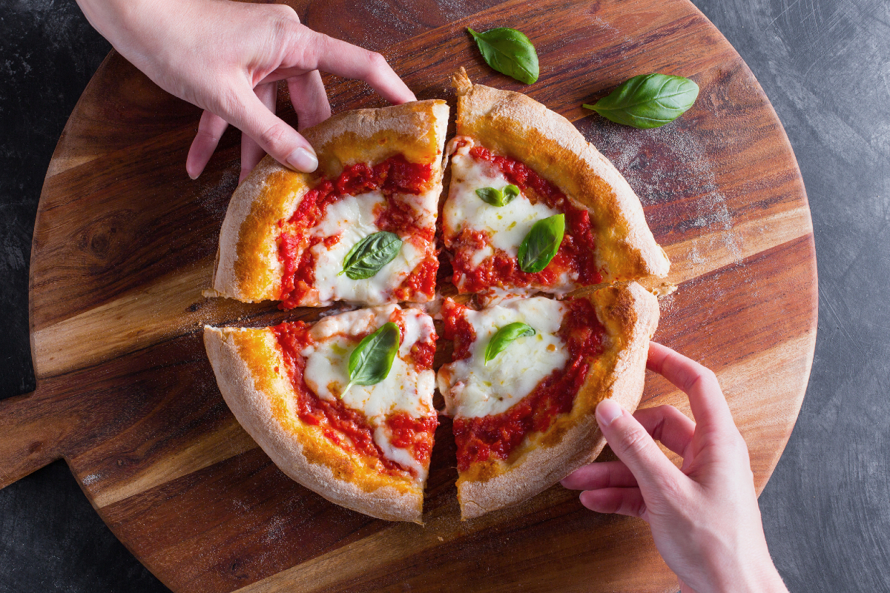

Pizza Margherita

Description:
Naples is a thousand shades – of pizza! But, if you ask around, they’ll tell you that there’s just one original, the Margherita pizza, and that tomato, mozzarella, and basil are the only toppings there are.
Every self-respecting pizza chef, or pizzaiolo, has their own recipe that they guard jealously, but we’d like to share the one that we’ve come up with.
Ingredients:
- Manitoba flour 1 ½ cup (200 g)
- Flour 00 2 ⅔ cups (300 g)
- Water 1 ⅓ cup (300 ml) - at room temperature
- Fine salt 1 ½ tsp (10 g)
- Fresh brewer's yeast 1 ¼ tsp (4 g)
- Tomato puree 1 ¼ cup (300 g)
- Mozzarella cheese ½ lb (200 g)
- Basil to taste
- Extra virgin olive oil to taste
Steps:
- Create a loaf with water, flour, yeast and salt and let it rest.
- After this leavening time has passed, the dough will be nice and puffed up, so transfer it to the work surface and divide it into three 9½-oz (365-g) pieces using a dough cutter. If needed, you can lightly flour the work surface. Next, take each portion of dough and lift up one end of it and bring it toward the center, like you did before in step. Repeat this process for the other 3 ends of the dough.
- Let the balls of dough rise for another 30 minutes. In the meantime, place the pizza stone in the upper part of the oven. Turn the oven on and heat to 480°F (250°C) in conventional mode. Now, using a dough cutter, carefully lift the first ball out of the dough container. Transfer it to a work surface with plenty of semolina and also add some semolina to the surface of the dough. Press down in the middle of the ball using your fingertips.
- Keep doing this, with a rotating movement, so the dough gets stretched out. Be sure not to press the edges down, however, and continue pressing and rotating until you get an 11-inch (28-cm) disc. Transfer the dough to a pizza peel, taking care not to damage it.
- Now, using a spoon to help you, spread some tomato purée on the dough, leaving some room around the edge 25. Place the raw pizza in the oven by sliding it carefully onto the stone. Let it cook for around 6 minutes. In the meantime, cut the mozzarella into strips or pull it apart with your hands. You can squeeze it out gently so that it doesn’t release too much water when it gets cooked. After 6 minutes have passed, take the pizza out of the oven using the peel.
- Arrange the pieces of mozzarella on top and then put it back in the oven for another 6 minutes, approximately. Once it’s nice and golden, take it out of the oven, add the basil leaves, and a drizzle of oil if you like, and serve up your Margherita pizza 30. Finish the other two pizzas following the same steps and enjoy while still hot.